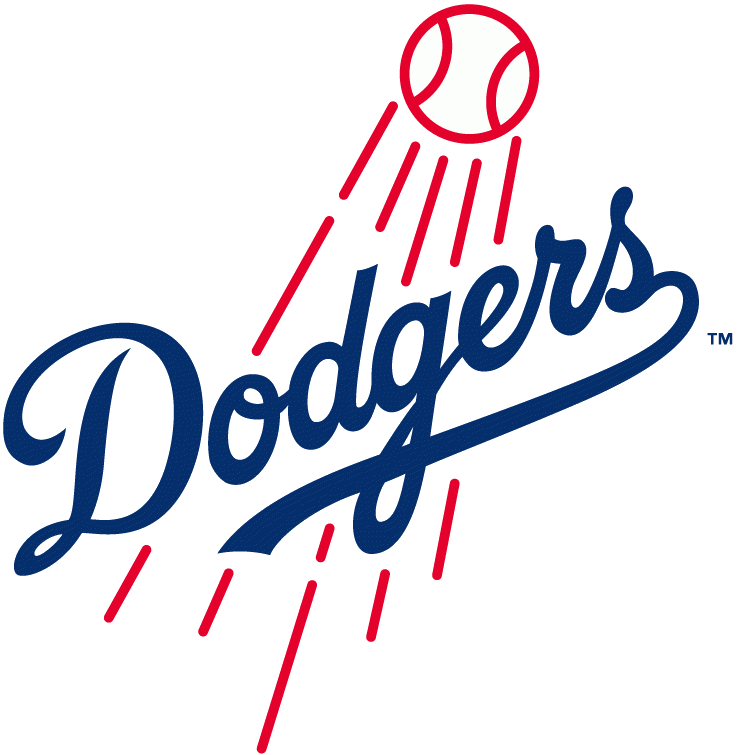

MLB의 프로야구단이며 내셔널리그 서부지구 소속 팀이고 연고지는 로스앤젤레스이다. 메이저리그 사상 최초로 흑인선수였던 재키 로빈슨을 기용했었으며 최초의 한국인 선수였던 박찬호와 아시아 프로리그 출신 사상 최초의 선수였던 노모 히데오가 소속하기도 했었다.
예로부터 투수친화적인 홈구장을 바탕으로 투수력을 앞세워 명문으로 등극한 MLB의 대표적인 투수 왕국 팀이다. 사이영상 수상 횟수가 총 12회로 이는 모든 MLB 역대 최다이다. 빅마켓 팀이면서도 신인 발굴, 육성에도 강점을 보여 신인왕 수상 횟수도 MLB 역대 최다이다.
월드시리즈에서 6번 우승한 명문팀이다. 2019년 현재 류현진 선수가 선발 투수로서 성공적인 시즌을 보내고 있다.
